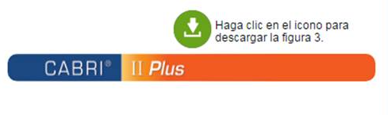
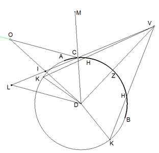
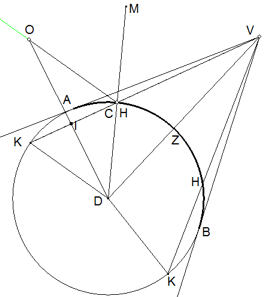
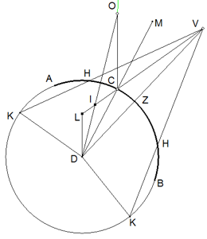

Si yo conozco la geometría del espejo esférico convexo y las ubicaciones del objeto y del observador, se pide hallar el punto de reflexión en la superficie del espejo. Es decir, un punto en la superficie del espejo en el cual ocurre que: (i) el rayo incidente, la normal y el rayo reflejado están en el mismo plano y (ii) el ángulo de incidencia es congruente con el ángulo de reflexión.
Figura 15. Formulación del problema de los espejos esféricos convexos
|  |
El problema no tiene solución para todas las posibles ubicaciones de observador y objeto. Por eso, en la primera parte estudiamos las condiciones que definen el umbral de posibles soluciones. También exponemos las características generales de la formación de imágenes. En la segunda parte resolvemos el problema para una situación trivial. Por último enfrentamos el problema para un caso general.
Si V determina la ubicación del observador al frente del espejo esférico convexo de centro D, VZD es normal a la circunferencia en el punto Z y BZA define la intersección del espejo con el plano de observación1, el sector efectivo de reflexión ha de quedar comprendido en AZB siempre que AV y VB sean tangentes a la circunferencia AZB. Si el punto de reflexión cae por fuera de ese sector, digamos en C, el objeto tendría que hallarse en algún punto de la semirrecta CO a condición de que ∠VCD ≅ ∠OCD. En este caso los rayos de luz OC y CV tendrían que atravesar el interior del espejo.
Figura 16. Sector de reflexión efectiva
El comportamiento de la imagen varía de acuerdo con el hecho de que el punto de reflexión caiga sobre uno de dos puntos particulares H, o caiga entre los dos puntos H, o lo haga entre H y B o H y A. H es el punto peculiar en el que HK coincide en longitud con el radio de la esfera (K es el otro punto de intersección de la recta VH con la circunferencia del espejo)2. El comportamiento de la imagen se puede seguir en la modelación en Cabri. El lector puede manipular tanto C (el punto de reflexión), como O (ubicación del objeto) para observar el comportamiento de la imagen I. Siguiendo el principio de Ptolomeo, esta imagen se obtiene en la intersección de la prolongación del rayo reflejado y la normal que contiene el objeto. Analicemos primero el caso en el que el punto de reflexión coincide con el punto H. Dado que el observador recibe el rayo en la dirección HV, el objeto sólo puede ubicarse sobre la recta OH de tal manera que el ángulo OHM sea congruente con el ángulo MHV3. OH resulta paralelo a KD. Este último resultado se puede ver de la siguiente manera4:
| ∠OHM ≅ ∠MHV | Segunda ley de reflexión |
| ∠MHV ≅ ∠KHD | Son opuestos por el vértice |
| ∠KHD ≅ ∠HDK | HDK es equilátero, toda vez que KH ≅HD por construcción |
| ∠OHM ≅ ∠HDK | Por transitividad |
|
- Dado que el objeto se puede ubicar en cualquier punto sobre la semirrecta HO, cuando este se acerca al punto H, su imagen I se pliega sobre H. - Cuando O se aleja al infinito, I se pliega sobre K. En cualquier caso, la imagen se restringe a un punto sobre el segmento KH (en el interior de la esfera). - Aclaro que no sigo fielmente el argumento de Alhacén aun cuando el resultado y la intención del análisis coinciden con los del filósofo árabe (Alhacén (2006), V, Proposición 9, caso 1, 2.82 – 2.84). |
|
En el segundo caso, cuando el punto de reflexión cae entre H y H el análisis conduce a lo siguiente. Sea C el punto de reflexión, MCD normal a la esfera en C, el objeto divisado ha de encontrarse en un lugar sobre la semirrecta CO de tal manera que el ángulo OCM sea congruente con el ángulo MCV. Sea DL paralelo a OC. Dado que D es el centro de la esfera, OD cae perpendicularmente sobre la superficie del espejo. La imagen del objeto ha de encontrarse en la intersección de OD y VC. Sea I tal intersección. Cuando O se desplaza desde la posición más cercana al espejo, a saber C, hasta la posición más distante, la imagen I se constriñe a desplazarse desde el punto C hasta el punto L5. En el caso extremo, cuando C coincide con H, L coincide con K y la imagen ha de encontrarse en un punto del segmento HK. De cualquier manera, la imagen se encuentra en el interior de la esfera. El argumento que presento aquí tampoco coincide con el de Alhacén aun cuando respeta la intención y las conclusiones (Alhacén (2006), V, Proposición 9, caso 2, 2.85 – 2.87).
En el tercer caso, el punto de reflexión C se encuentra en el arco HB o en el arco HA. El análisis coincide con el del caso anterior, salvo que en este caso el segmento CL contiene una parte en el interior de la esfera y la otra parte en el exterior. En ese caso hay posiciones de O que generan imágenes en el interior y posiciones que generan la imagen en el exterior. La situación límite se obtiene cuando la normal OD corta la circunferencia en el mimo punto en donde lo hace CL. Como en los casos anteriores, el argumento no coincide con el de Alhacén aun cuando respeta la intención y las conclusiones (Alhacén (2006), V, Proposición 9, caso 3, 2.88 – 2.91).
|  |  |  |
| Entre A y H | En H | Entre H y H |
Figura 17. Formación de imágenes
La siguiente figura muestra una superficie reflectante esférica, y el punto V en donde se puede concebir un observador. VZ es ortogonal a la esfera. Si el segmento VK, atendiendo a las especificaciones de las demostraciones inmediatamente anteriores, se hace rotar alrededor del eje VZ se define un corte sobre la esfera tal que si el punto de reflexión cae sobre dicho sector, la imagen del objeto visto será contemplada en el interior del espejo sin importar la ubicación del objeto (casos 1 y 2). Si se hace rotar el segmento VB en torno a VZ se define un nuevo corte que determina un nuevo sector. Si el punto de reflexión cae en este sector ocurre que, dependiendo de la distancia a la que se encuentre el objeto, la imagen podrá formarse en el interior de la esfera, en la superficie de la esfera, o por fuera de la esfera (caso 3) (Alhacén (2006), V, 2.93 – 2.94). Si el punto de reflexión cae por fuera de estos dos sectores, no hay imagen que pueda ser contemplada desde V.
Figura 18. Superficie reflectante esférica
Alhacén divide el problema en dos casos. En el primero caso se establece como condición que tanto objeto como observador se encuentren a la misma distancia del centro del espejo. Imaginemos que O representa la posición del objeto y V la del observador frente a un espejo esférico convexo de centro en N. Imaginemos también que ON ≅ VN . La circunferencia AGB define el corte de la esfera con el único plano que contiene a los puntos O, V y N. Los puntos A y B definen los límites del sector efectivo para la reflexión. Se traza la bisectriz NGM al ángulo ONV. Esta bisectriz se encuentra en el plano ONV y corta ortogonalmente la circunferencia en G. Los triángulos OGN y VGN son obviamente congruentes y, en consecuencia, los ángulos OGM y MGV son congruentes. De otra parte, OG, GV y GM se encuentran en el mismo plano ONV.
Figura 19. Caso trivial
Retomamos el problema propuesto inicialmente: dada una circunferencia de centro G y los puntos exteriores B (objeto) y A (observador), se pide hallar la ruta del rayo de luz que va desde B hasta A pasando por D (un punto en el espejo cuya normal es DE) de tal manera que los ángulos BDE y ADE sean congruentes. He procurado ser fiel a las líneas de argumentación pero me aparto totalmente de los esquemas retóricos de presentación. Trato de ofrecer una presentación un poco más amable aunque lo escabroso del camino seguido por Alhacén hace muy difícil encontrar una presentación amena.
Figura 20. Caso general
La solución exige las siguientes construcciones. Estas construcciones se pueden seguir en la modelación en Cabri activando los botones correspondientes a la numeración que aquí se presenta.
Figura 21. Demostración en espejos esféricos convexos
La ubicación de la construcción al margen es completamente irrelevante. En consecuencia y a diferencia de Alhacén, haremos la construcción sobre la disposición inicial para facilitar la contemplación de primera mano de las congruencias requeridas (Obviamos la solución descartada por Alhacén). Para ello, construimos el segmento GK, a continuación de BG, de tal manera que AG ≅ KG. Para que el lector pueda seguir la variación propuesta, rebautizaremos los puntos G y B con las alusiones G-F, B-M. De esa manera se pueden seguir las descripciones en uno u otro esquema. Después replicamos todas las construcciones enunciadas en la presentación de la prueba.
Figura 22. Demostración en espejos esféricos convexos II
Figura 23. Construcciones auxiliares
| (1) ∠QDN = (∠HDL/2) |
(a) ∠QDN + ∠GDQ = ∠GDN (recto por construcción) (b) ∠OCK + ∠OKC es recto (ΔOCK es rectángulo) (c) ∠OKC ≅ ∠GDQ (por construcción) (d) ∠QDN ≅ ∠OCK (por (a), (b) y (c)) (e) ∠OCK = (∠BGA/2) (por construcción) (f) ∠BGA = ∠HDL (por construcción) |
| (2) ∠BDQ = (∠BDL/2) |
(a) ∠BDL = ∠BDQ + ∠QDL (b) ∠QDL ≅ ∠QIB (alternos entre paralelas) (c) ∠QIB ≅ ∠BDQ (ΔDBI es isósceles) (d) ∠BDL = 2∠BDQ (por (a), (b) y (c)) |
| (3) ∠BDN ≅ ∠NDH |
(a) ∠BDN = ∠QDN + ∠BDQ (b) ∠BDN = ((∠BDL - ∠HDL)/2) reemplazando (1) y (2) en (a) (c) ∠BDN = (∠BDH/2) pues ∠BDL - ∠HDL = ∠BDH (d) ∠BDH = ∠BDN + ∠NDH |
| (4) ∠BDE ≅ ∠HDG |
Sus ángulos complementarios (BDN y NDH) son congruentes (3) |
| (5) H, D y A son colineales |
Conjetura |
| (6) ∠BDE ≅ ∠EDA |
(a) ∠EDA ≅ ∠HDG (dado (5), ellos son opuestos por el vértice) (b) ∠HDG ≅ ∠BDE (por (4)) |
Prolongamos HD hasta cortar GA en un punto W, por tanto W es colineal con H y D. Mostraremos que W coincide con A. Sea el triángulo GHW. Trazamos HT paralelo a BD (con T sobre GD).
Figura 24. Demostración de la conjetura
| (1) IQ/QD = BG/GA |
(a) ΔSPK ≈ ΔBGD (pues SP/PK = BG/GD en virtud de la construcción auxiliar (iii) y ∠BGD ≅ ∠SPK por construcción) (b) ΔFPK ≈ ΔQGD (c) ΔBDQ ≈ ΔSKF (d) ΔBQZ ≈ ΔSOF (estas tres semejanzas se infieren de las construcciones adelantadas y de las proporciones emergentes se concluye (1) |
| (2) IQ/QD = BD/DL |
(a) ΔLDQ ≈ ΔBQI |
| (3) BD/DL = BG/GA |
(a) por (1) y (2) |
| (4) BD/DL = (BG/HG)(HG/GW) |
(a) HD/DL = GH/GW (ΔHDL ≈ ΔHWG, pues H, D, W son colineales y ∠HDL ≅ ∠HGA (por construcción) ≅ ∠HGW (pues G, A, W son colineales)) (b) BD/DL = (BD/DH)(HD/DL) tomando HD como media proporcional de BD y DL (c) DH/DL = HG/GW (pues ΔHDL ≈ ΔHWG, ya que W, L y H son colineales y ∠HDL ≅ ∠HGA (por construcción)) (d) BD/HT = BG/GH (pues BD es paralelo a TH) (e) HD ≅ HT (pues, ΔTHD es isósceles, considerando que ∠BDE ≅ ∠HDG ((4) en la prueba anterior) y ∠BDE ≅ ∠HTD (alternos entre paralelas)) (f) BD/HD = BG/HG (sustituyendo (e) en (d)) (g) (4) se obtiene sustituyendo (a) y (f) en (b) |
| (5) ∠BDE ≅ ∠HDG |
Sus ángulos complementarios (BDN y NDH) son congruentes (3) |
| (5) BG/GA = (BG/HG)(HG/GW) |
(a) sustituyendo (3) en (4) |
| (6) BG/GA = (BG/HG)(HG/GA) |
(a) tomando HG como media proporcional entre BG y GA |
| (7) W = A |
(a) GW ≅ GA de (5) y (6) |
1 Es decir el plano en el que se encuentran el rayo incidente, el reflejado y la normal.
2 La existencia del punto H queda garantizada por el siguiente argumento. Si hacemos girar en el plano la semirrecta VK en torno a V, el segmento de intersección con la circunferencia (cuando existe tal intersección) varía entre dos extremos: máximo, cuando la semirrecta cae ortogonalmente, en ese caso VK coincide con VZ y el segmento de intersección coincide con un diámetro (2R); y mínimo, cuando la semirrecta coincide con una tangente, ora VA, ora VB, en ese caso la longitud del segmento de intersección se hace cero. En ese orden de ideas, ha de existir una posición intermedia para la cual el segmento de intersección coincide con la longitud del radio de la circunferencia.
3 MD es la normal a la superficie trazada en H.
4 Sigo una argumentación ligeramente diferente a la exhibida por Alhacén aunque equivalente.
5 Cuando el objeto se aleja al infinito, la imagen converge al punto L. En ese caso CI ≅ ID. Por eso Alhacén concluye que no se puede ubicar el objeto en una posición tal que la distancia de la imagen al centro de la esfera coincida con la distancia de la imagen al punto de reflexión (Alhacén (2006), V, proposición 10, 2.96 – 2.102).
Cuando Alhacén enfrenta el caso de los espejos esféricos cóncavos sugiere el mismo procedimiento que lleva a la solución de los espejos convexos, salvo que ahora considera las dos soluciones que el protocolo arroja. Imaginemos que G es el centro de un espejo esférico, A y B son dos puntos arbitrarios (un objeto y un observador). Sean DZ el diámetro que contiene a B y EH el diámetro que contiene a A. Si T y Q son las soluciones que arroja el protocolo de Alhacén en el mismo arco EZ, Alhacén demuestra que los respectivos ángulos de reflexión no pueden ser ambos menores que el ángulo AGD (Alhacén (2006), V, 2.410–2.424). Es decir, si ∠ATB < ∠AGD, debe ocurrir que ∠AQB < ∠AGD. El lector puede encontrar un applet diseñado por A. I. Sabra para mostrar soluciones al problema de Alhacén en el caso de los espejos esféricos cóncavos en la siguiente dirección: enlace
Figura 25. Espejos esféricos cóncavos
Sea G el centro de un espejo esférico. A y B dos puntos libres (uno de ellos un objeto y el otro un observador). Para evaluar si el problema de Alhacén tiene una, dos, tres o cuatro soluciones, Alhacén pide trazar la circunferencia que pasa por A, B y G. Esta nueva circunferencia puede no cortar el espejo, cortarlo en dos puntos o hacerlo sólo en un punto. Para cada caso habrá que esperar un comportamiento diferente. Si dicha circunferencia no corta el espejo, hay sólo una solución en el arco EZ (Alhacén (2006), V, 2.472–2.474).
Figura 26. Espejos esféricos cóncavos
Si dicha circunferencia corta al espejo en dos puntos, puede haber hasta cuatro (no más) soluciones diferentes: Q, R, S, T. (Alhacén (2006), V, 2.476–2.486)
Figura 27. Espejos esféricos cóncavos
Si la circunferencia sólo corta en un punto al espejo, habrá sólo dos soluciones: T y Q (Alhacén (2006), V, 2.475).
Figura 28. Espejos esféricos cóncavos (un solo corte)